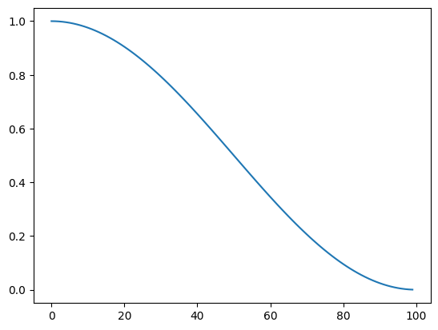

In this blog, we will learn about Pytorch optimizers and learning rate schedulers. From all the learning rate schedulers, we will learn about CosineAnnealingLR and OneCycleLR by writing them from scratch.
We can use a learning rate scheduler to vary the learning rate while training. Why do we want to change the learning rate? Let’s take a look at an example.
So, let’s assume we are stranded in the desert while traveling because our vehicle broke down. We are thirsty, so we want to find some water. We get out of the car to find a well. Thankfully, we have a device that beeps when close to a body of water. The more water, the louder the beep. So, we walk in different directions to figure out where to go. After figuring out the direction, we can run for fast travel. When we are close to water, we want to slow down to find exactly where to dig to find the water. We don’t want to go past the water and come back.
By changing learning rate, we can change the speed of the training of the model. With the scheduler, we want to start with a small learning rate. In the beginning, our model is trying to figure out which direction to travel to reduce the loss. After it knows where to step, we can increase the learning rate to take bigger steps. In the end of the training, it’s so close to the ideal point, and we don’t want to go past. Therefore, we lower the learning rate to fine tune.
So, let’s see this in action.
from google.colab import drivedrive.mount('/content/drive')!pip -q install torcheval!pip -q install datasets
Mounted at /content/drive
/content/drive/MyDrive/Colab Notebooks
━━━━━━━━━━━━━━━━━━━━━━━━━━━━━━━━━━━━━━━━ 179.2/179.2 kB 3.3 MB/s eta 0:00:00
━━━━━━━━━━━━━━━━━━━━━━━━━━━━━━━━━━━━━━━━ 521.2/521.2 kB 7.3 MB/s eta 0:00:00
━━━━━━━━━━━━━━━━━━━━━━━━━━━━━━━━━━━━━━━━ 115.3/115.3 kB 13.1 MB/s eta 0:00:00
━━━━━━━━━━━━━━━━━━━━━━━━━━━━━━━━━━━━━━━━ 134.8/134.8 kB 14.8 MB/s eta 0:00:00
Before we look into schedulers, we need to look at Pytorch optimizers. We know how optimizers work in general from last blog, but Pytorch optimizers are a little bit different. To initialize a Pytorch optimizer, we need parameters and a learning rate.
model = get_model()opt = optim.SGD(model.parameters(), lr=0.1)opt
We can also grab an optimizer from the learner. With SingleBatchCB, we can stop the training after one batch. This way, every initialization step is run, and we know there is no error when the batch ran.
It’s time to look at schedulers. Let’s look at CosineAnnealingLR and see how the learning rate changes by plotting it. To create a scheduler, we have to pass in an optimizer and the number of total steps. The optimizer stores states such as learning rate, and total steps are used to determine how to change the learning rate.
We can use step and get_last_lr to update and get the learning rate.
sched.get_last_lr()
[1]
Let’s plot the function to see how the learning rate changes.
lrs = []for i inrange(100): lrs.append(sched.get_last_lr()) opt.step() sched.step()plt.plot(lrs);

We can create a plotting function to explore more. If we step more than t_max, we can see the cosine curve coming up. We can also use eta_min to set the minimum of the learning rate.
Now, let’s go over OneCycleLR. This technique came from Cyclical Learning Rates for Training Neural Networks by Leslie Smith. He experimented a lot with hyperparameters like learning rate, momentum, batch size, and weight decay. In the paper, he went over triangular learning rate policy. Let’s see what it looks like from Pytorch’s version.
Why does our model starts from the lowest to maximum and back down to the lowest? As menteioned before, it starts with the lowest to warm up. As it trains, it finds where to step, so we can take bigger steps. Then, we slow down to fine tune.
It’s very simple to implement. We can easily write the program.
With OneCycle, we can increase the learning rate a bit more. Try it out and see how much you can increase.
By default, Pytorch’s OneCycleLR uses cosine annealing to modify both learning rate and momentum for the batch norm. In A disciplined approach to neural network hyper-parameters: Part 1, Leslie Smith talks about how there is a balance in regularization using learning rate, batch size, momentum, and weight decay. To summarize, - High batch size: high regularization - High weight decay: high regularization - High learning rate: high regularization - High momentum: high regularization
Learning rate and momentum are more closely related. When using high regularization, learning rate has to be reduced, and vice versa. That’s what the Pytroch’s OneCycleLR takes advantage of.
In this blog, we learned about Pytorch optimizers and schedulers. We were already familiar with optimizers, but we learned how Pytorch optimizers store states. Then, we went over CosignAnnealingLR and OneCycleLR schedulers and wrote them from scratch. We also went over Leslie Smith’s papers regarding balancing regularization and scheduling learning rates.